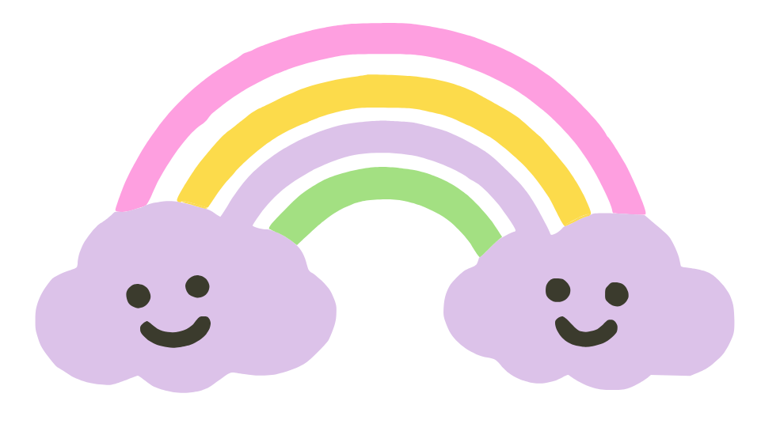
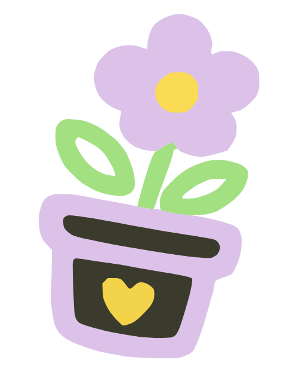
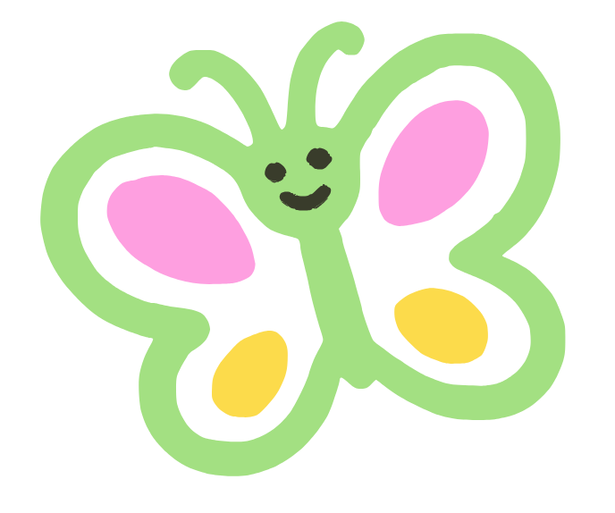
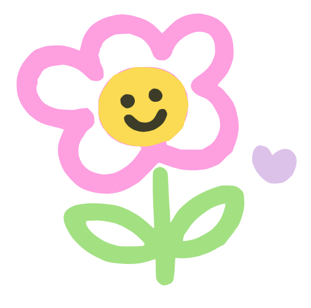
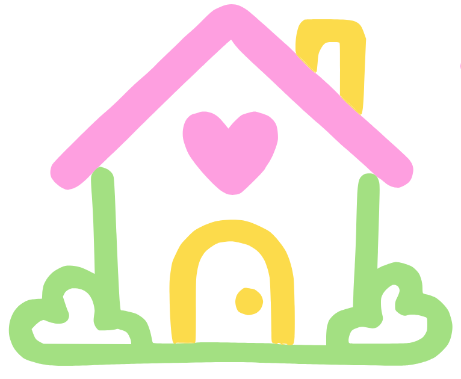

Garantizamos la protección integral de niños, niñas y adolescentes en situación de vulnerabilidad, promoviendo su desarrollo físico, emocional, social y cognitivo junto a sus familias.




Atención alimentaria diaria a 200 niños y niñas.
Restablecimiento de derechos y acogida segura.
Desarrollo personal, familiar, social y de prevención.
Atención psicosocial, nutricional, pedagógica y recreativa.

Sembrando oportunidades para crecer. Somos una fundación sin ánimo de lucro comprometida con el bienestar de niños, niñas y adolescentes. Trabajamos junto a las familias para promover educación, valores, protección y desarrollo integral.
Apoyo académico para fortalecer el aprendizaje y mejorar el desempeño escolar.
Talleres de lectura, matemáticas y estudio asistido para potenciar habilidades y confianza en el aula.
Espacios que promueven respeto, responsabilidad, liderazgo y convivencia.
Programas participativos que integran a familias y docentes para sembrar hábitos de convivencia positiva.
Jornadas deportivas, culturales y artísticas para el desarrollo integral.
Eventos creativos para descubrir talentos, fomentar la expresión y fortalecer la salud física y emocional.
Acompañamiento a padres y cuidadores para fortalecer los entornos familiares.
Asesorías y talleres parentales para resolver conflictos, cuidado y acompañamiento afectivo.
Promovemos hábitos de alimentación saludable y acompañamos el bienestar físico de nuestros beneficiarios.
Menus balanceados, talleres de cocina y seguimiento nutricional para un crecimiento sano.
Brindamos orientación y acompañamiento emocional para fortalecer la autoestima y la convivencia.
Sesiones individuales y grupales con profesionales para apoyar procesos de reparación y crecimiento personal.
Garantizar la protección integral de niños, niñas y adolescentes en situación de vulnerabilidad, promoviendo su desarrollo físico, emocional, social y cognitivo, a través de programas que fortalezcan sus derechos, potencien sus habilidades y acompañen a sus familias en la construcción de entornos seguros y protectores.
Nace Jardín de Amor brindando alimentación diaria a 200 niños y niñas en situación de vulnerabilidad.
Se constituye formalmente como hogar de paso para ofrecer acogida y entorno seguro.
Inicia la atención integral bajo la modalidad de internado, evolucionando hacia el externado con enfoque en desarrollo personal, familiar y prevención.
Continuamos consolidando nuestro modelo integral, empoderando familias y preparando a 100 niños, niñas y adolescentes para el futuro.
Donación económica, voluntariado o aportes en especie: tú decides cómo aportar.
Transfiere a nuestra cuenta Bancolombia, escríbenos por WhatsApp o coordina la entrega de donaciones.
Tu aporte se convierte en alimentación, educación y protección para nuestros niños y niñas.
Elige la forma en la que quieres ayudar: donación económica, voluntariado o en especie. Cada aporte se traduce en alimentación, formación y protección para nuestros niños y niñas.